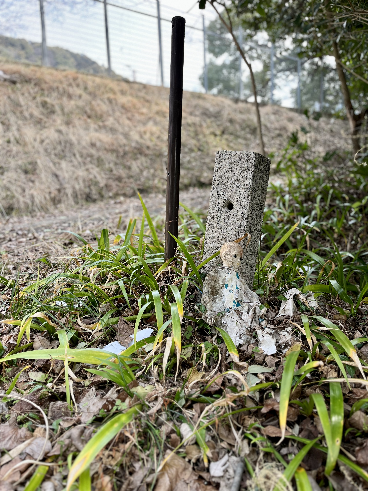
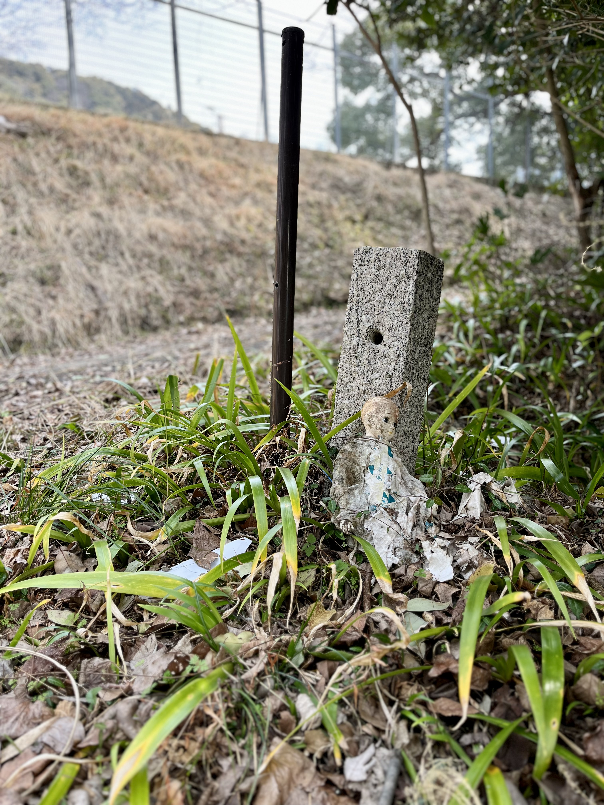

During our visit to Eshin-in Temple, I couldn't help but notice how different it was from the other temples we had previously visited. The temple's simplicity stood out among the more elaborate and ornate temples we had seen before. It was nestled in an environment that, at first glance, appeared somewhat dull and uninviting, but the temple itself was a beautiful beacon of serenity, located just off the Uji River. As I wandered away from the group to explore the surrounding area, I stumbled upon a doll hidden among some tall stalks of grass. The doll appeared weathered and worn, with chipping paint and a story that was left untold. I couldn't help but wonder how it came to be there, and what its purpose was. Perhaps it was a forgotten memorial, or maybe it had been abandoned by a child. Regardless, the doll had found a new home at the temple, adding to its unique surroundings and the allure of the experience.